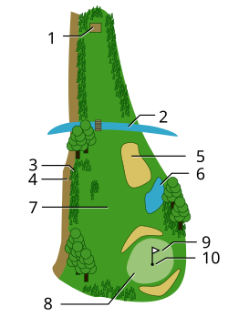
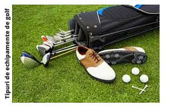

Descrierea Terenului de Golf
Terenul de golf este împărțit în mai multe zone distincte, fiecare având un rol specific în cadrul jocului. Fiecare zonă este esențială pentru succesul unui jucător, iar înțelegerea acestora ajută la îmbunătățirea abilităților și strategiei de joc.
- Tee Box (Zona de Start): Aceasta este zona unde jucătorii încep fiecare groapă. Este un spațiu amenajat, cu iarbă tăiată scurt și o suprafață netedă care permite lovitura inițială, cunoscută ca "teeing off". Aici se pune mingea pe un tee (un suport mic de plastic sau lemn), ridicând-o la înălțimea corectă pentru lovitura de început.
- Fairway (Drumul Principal): Fairway-ul reprezintă zona principală a terenului între tee și green. Iarba este tăiată scurt, ceea ce permite lovituri precise și controlate. Aceasta este zona optimă pentru loviturile lungi, deoarece mingea poate să ruleze ușor pe terenul neted, făcându-le mai precise.
- Rough (Iarba Înaltă): Acesta este un teren cu iarbă mai înaltă care înconjoară fairway-ul și green-ul. Iarba din rough nu este tăiată la fel de scurt ca pe fairway, ceea ce face ca loviturile să fie mai dificile. Dacă mingea ajunge în rough, jucătorul va întâmpina dificultăți în a o controla și va trebui să depună mai mult efort pentru a o readuce pe drumul corect.
- Bunker (Buncăr sau Groapă de Nisip): Bunkerele sunt găuri umplute cu nisip, plasate strategic pe teren pentru a adăuga dificultate jocului. De obicei, ele sunt amplasate în jurul green-ului sau în fața fairway-ului. Loviturile din bunker sunt provocatoare din cauza terenului nisipos, care face ca controlul mingii să fie mai dificil.
- Green (Zona de Finalizare a Jocului): Green-ul reprezintă zona unde se află gaura propriu-zisă, de obicei marcată cu o bandă de metal sau plastic. Iarba din această zonă este tăiată foarte scurt, ceea ce permite mingii să se miște fin și controlat. Aici se încheie fiecare groapă, iar jucătorii folosesc un putter pentru a introduce mingea în gaură.
- Hazard (Obstacole): Hazardele sunt zone speciale pe teren care includ obstacole naturale sau artificiale, adăugând dificultate jocului. Acestea pot include ape (lacuri, râuri, iazuri) și zone stâncoase. Dacă mingea ajunge într-un hazard cu apă sau într-o zonă de stânci, jucătorul riscă penalizări și trebuie să se descurce cu opțiunile limitate pentru a continua jocul.
- Tees de Înlocuire (Rest of Tees): Acestea sunt zone adiționale de pe teren unde jucătorii pot alege să lovească mingea pentru un nou start, în funcție de nivelul lor de joc. Tees-urile de înlocuire sunt marcate prin culori diferite pentru a indica distanța față de groapă, oferind astfel opțiuni pentru jucători de diferite abilități.
- Clubhouse și Facilități Adiționale: Clubhouse-ul este clădirea principală situată la începutul și sfârșitul terenului de golf. Aceasta oferă servicii și facilități precum vestiare, restaurant și zone de relaxare. Clubhouse-ul servește și ca loc pentru înregistrarea la turnee, achiziționarea echipamentului necesar și socializarea după o rundă de golf.
- Zona de Încălzire: Multe terenuri de golf dispun de zone speciale pentru antrenament și încălzire. Acestea includ terenuri de driving range, unde jucătorii pot exersa loviturile lungi, și putting green, care este destinat exercițiilor de putt. Aceste zone ajută jucătorii să se încălzească și să-și îmbunătățească abilitățile înainte de a începe jocul propriu-zis.
Echipamentul necesar
Pentru a juca golf, jucătorii au nevoie de echipament adecvat, inclusiv crose de golf, mingi, teuri, baguri și încălțăminte specială. Fiecare jucător poate alege crosel de diferite tipuri pentru a aborda diversele dificultăți ale terenului. Unele accesorii suplimentare, cum ar fi mănușile, sunt folosite pentru confort și performanță.
- Crosele de golf: Fiecare jucător poate utiliza un maxim de 14 crose pe parcursul unui joc. Acestea sunt împărțite în diferite tipuri, fiecare având un rol specific:
- Driver: Folosit pentru lovituri lungi de pe tee, la începutul fiecărei gropi.
- Ierburi (Irons): Folosite pentru lovituri pe distanțe medii și scurte. Sunt numerotate de la 3 la 9, iar fiecare număr reprezintă un unghi diferit al croselor, care afectează distanța și înălțimea loviturii.
- Lob Wedge: Crosă de înaltă înclinare pentru lovituri scurte și precise, folosită în apropierea găurii sau din sand trap (bunker).
- Putter: Folosit pe green pentru a introduce mingea în gaură, având o față plată pentru controlul precis al direcției.
- Fairway Wood: Crosă pentru lovituri mai lungi pe fairway, folosită pentru a ajunge la distanțe mari, dar fără a risca obstrucțiile majore.
- Mingea de golf: O minge de golf standard este compusă dintr-un miez de cauciuc și o coajă exterioară durabilă. Mingea are dimensiuni și greutate reglementate conform standardelor internaționale.
- Bag de golf: Un bag este folosit pentru a transporta crossele, mingea și alte accesorii. Acesta poate fi purtat sau transportat cu ajutorul unui cărucior de golf. Există două tipuri de baguri:
- Bag de umăr: Ușor și portabil, ideal pentru jocurile scurte.
- Bag de cărucior: Mai mare și mai greu, conceput pentru a fi utilizat cu căruciorul de golf.
- Teuri (Tee-uri): Teurile sunt suporturi mici de plastic sau lemn, folosite pentru a ridica mingea la începutul fiecărei gropi pe tee box.
- Mănuși de golf: Mănușile de golf sunt esențiale pentru a asigura o prindere fermă a croselor și pentru a preveni formarea bătăturilor pe mâini în timpul loviturilor.
- Încălțăminte de golf: Încălțămintea de golf are un design special cu tălpi care au crampoane sau elemente de aderență pentru a preveni alunecarea pe teren.
- Panglica pentru măsurători (Rangefinder): Un dispozitiv folosit pentru a măsura distanța până la diferite puncte de pe teren, cum ar fi gaura sau obstacolele.
- Umbrela de golf: O umbrelă rezistentă este importantă pentru protecția împotriva soarelui sau a vremii nefavorabile.
- Prosop: Un prosop mic este folosit pentru a șterge umezeala de pe crosă sau de pe mingea de golf.
- Marker pentru mingea de golf: Un marker este folosit pentru a marca poziția mingii pe green, astfel încât să nu fie mutată accidental.
- Accesorii suplimentare:
- Kit de reparat gropile: Folosit pentru a repara urmele de pe green lăsate de mingea de golf.
- Punga de apă și băuturi: Pentru a te menține hidratat pe parcursul jocului.
- Protecție solară: Cremă sau spray pentru a proteja pielea de razele soarelui.

